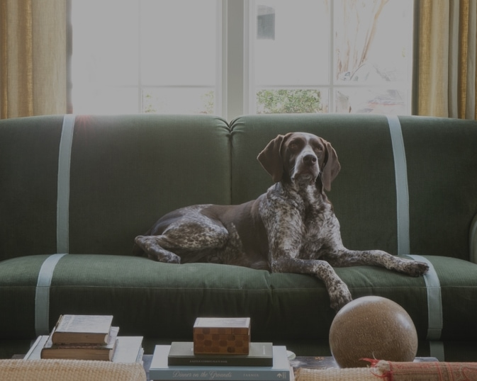
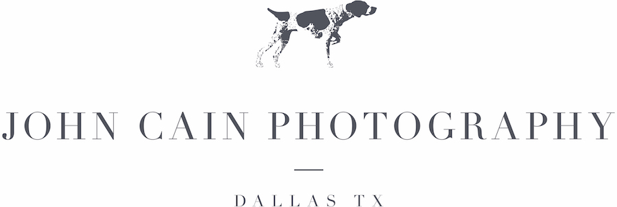
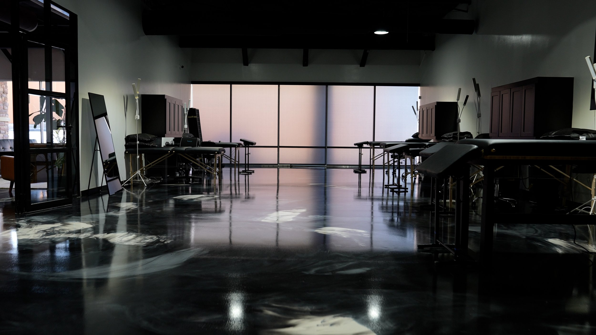

Photographer roles


Event Photographer / Associate Photographer
https://www.indeed.com/viewjob?jk=eb967583870a76d2&from=shareddesktop_copy
This listing is about a photorapher position that is an associate photographer role that supports / assists other photographers for weddings and events that happen on the weekend. The pay is aboyt $50/hr and I think I would be a good fit because I do different ocassions, and like capturing couples. Since it's also in Dallas, I think it's very convenient.
Photographer (Part Time)
https://www.indeed.com/viewjob?jk=e3731fbe1c0be6b3&from=shareddesktop_copy
This listing is a part-time photographer position located in the greater DFW area mainly for business like salons, retail, and local businesses. I don't have much experience doing commmercial photography but I think it would be good to have experience in this. Also the pay is $18-20 / hour which isnt bad at all.
Creative Roles

Digital Content Creator
https://www.indeed.com/viewjob?jk=3df343d7310a4aa3&from=shareddesktop_copy
This position is more about content creation for producing photo, video , and social media content that tells the story of this Tatoo Studio called Eden Body Art Studio. As it's located in Dallas, I think it would be a great fit because their ideal canidate are those that are creative, organized, and confident behind the camera to capture tattoos, clients and moments within the studio. I haven't done photography of tattoos but it seems like very fitting and interesting for me.
Content Creator and Curator
https://www.indeed.com/viewjob?jk=33dd2467c76e5a23&from=shareddesktop_copy
This role is pretty close to home, as it is located in the Toyota dealership in Plano,TX. Although I don't have much experience in producing videos as much as photography, I think it would be a great fit as I do have experience making short-form videos and also graphic desigining. I'm also good at emailing and making scripts.